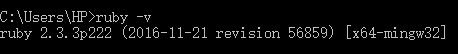
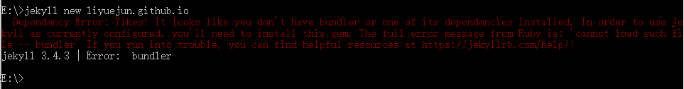
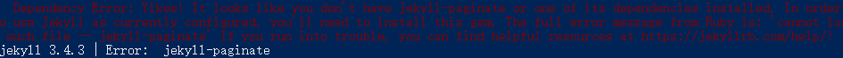
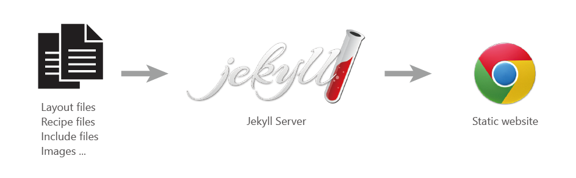
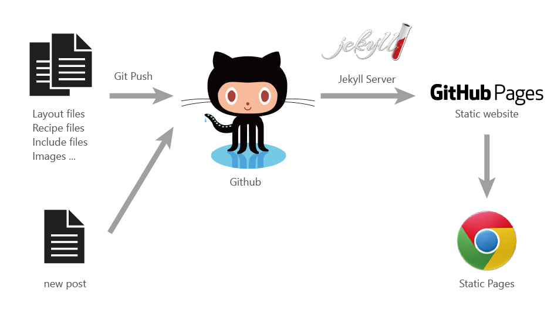

对比 Jekyll, Hexo, Hugo等热门解析工具
截止到2017/5/14 ， github上star和folk分别为:
Jekyll 29.7k/6.61k
Hugo 17k/2.41k
Hexo 16.2k/2.49k
考虑到搭建个人博客比较重要的是轻量，可定制，以及相关技术支持（如语法、bug、设计等等） 虽然Ruby编译速度比go和nodejs慢，但是在个人博文数量不多的情况下完全可以忽视。因此，最终决定选择Jekyll搭建个人第一个静态博客
搭建过程
1. 安装本地Jekyll
a. 安装Ruby
为什么需要Ruby：
Jekyll 是 基于 Ruby 的解析引擎， 能够将模板、markdown等文件转换为“静态网页” 需要搭建Ruby环境，来支持Jekyll运行
如何安装Ruby：
i. Ruby官网下载对应版本 https://www.ruby-lang.org/en/downloads/
ii. windows新手推荐使用RubyInstaller，官方安装工具，一键式解决路径配置 rubyinstaller.org 下载。
安装完毕后，打开cmd，输入ruby -v查看

如图，显示版本则安装成功
b. 安装RubyGems
为什么需要RubyGems：
RubyGems是Ruby的包管理系统，使用它可以方便安装、查看、修改Ruby应用
如何安装RubyGems：
首先到官网下载 http://rubygems.org/pages/download
解压文件,打开cmd使用cd命令进入解压出的文件夹
输入 ruby setup.rb 进行安装
c. 使用RubyGems安装Jekyll
cmd输入gem install jekyll
到此为止，本地Jekyll安装成功，接下来开始搭建博客
2. 搭建本地个人博客
a. 步骤
命令行 cd 进入想要创建blog的目录下输入
Jekyll new yourblogname
可以看见此时新建了一个名为yourblogname的文件夹，里面已经初始化好了jekyll所需的所有文件
cd yourblogname
jekyll serve
成功开启jekyll本地服务服务器。
如果已经写好了网页，只需要在放置网页的目录下运行jekyll serve
b. 可能出现的问题
如图 :


类似问题有一个共同特征:'cannot load such file -- xxx'
解决办法非常简单，输入gem install xxx, xxx 是无法加载的文件。安装缺少的文件后就可以正常运行了
出现 Syntax error: Invalid GBK character :
找到 Ruby 的安装目录，里面也有sass模块，如这个路径：
C:\Ruby21-x64\lib\ruby\gems\2.1.0\gems\sass-3.4.8\lib\sass
在该路径文件里面 engine.rb，添加一行代码（放在所有的require XXXX 之后即可）：
require ...
require 'sass/supports'
Encoding.default_external = Encoding.find('utf-8')
3.运行博客
a. 打开本地博客
浏览器地址栏输入localhost:4000即可浏览初始化文件。
如果无法打开网页，请检查_config.yml文件里baseurl的值。删除baseurl或输入此地址
此时已经可以修改定制属于你自己的网页文件了
b. 布置到github
相关git安装配置及使用不再重复，请自行百度google
jekyll解析流程图


github上建立一个名为 yourname.github.io的repo
github在检测到io后缀的repo时，会自动加载pages服务，并用jekyll解析文件
将repo克隆到本地，把之前建立的blog文件夹里所有文件转移到此目录下，push到github上，等待数分钟GitHub更新缓存。 在浏览器地址栏输入yourname.github.io，即可欣赏新鲜出炉的个人博客了
后续
接下来准备进一步了解jekyll的使用，比如全局配置，变量使用等等